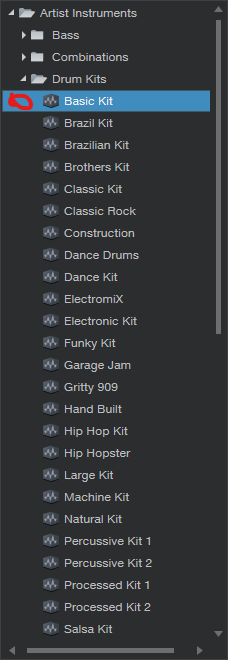
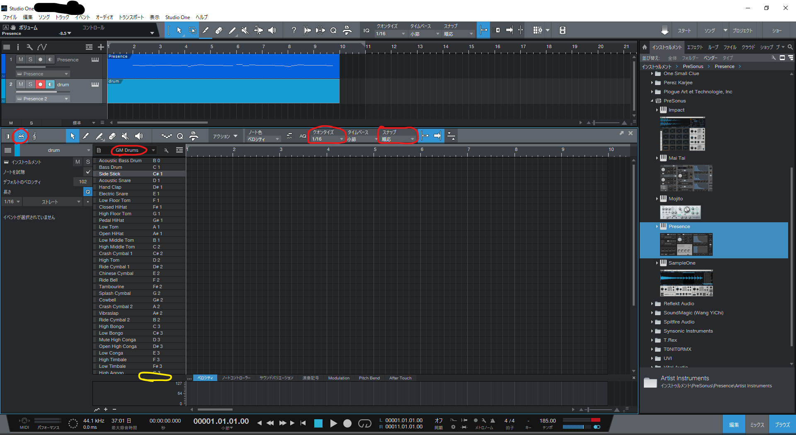

第4回
次へ→
第?回
第4回 リズム・ミックス
目次
4.3.1 DAWの使い方

の画面を開いて、Grand Pianoを「Drum kits」→「Basic kit」に変更してください。
 ピアノロールの左上にピアノの鍵盤のアイコンが青く光っている部分があるので、その隣のドラムを選択してください。ドラムモードになります。左から二番目の赤丸の所をクリックして「GM Drums」を選択してください。
基本はメロディの時と一緒です。Ctrl+クリックで音符を置いて、もう一度Ctrl+クリックすると音符が消せます。32分とかにしたい方はクォンタイズを調節してみてください。
ただ長さ調節はできないです、打楽器の音って瞬間的で、調節する意味ないので。
音量の調節についてですが、Studio Oneでは何も開いたりせずとも、下のほうにベロシティという枠があるので、そこの棒を上下にドラッグすれば調整できます。（第一回でもちょっと話した）
黄色丸の所を上下ドラッグで、ウィンドウの大きさを変えられます。
4.4.1 パンニング

第1回の時と同じように、「ミックス」をクリックすると画像のコンソールが出てきます。Studio Oneではパンニングはこの青い棒を左右に移動させることで行います。
4.4.2 フェーダーワーク
ミュートボタン、ソロボタンはそれぞれM、Sと書かれたボタンに割り当てられています。効果はほかのDAWと同じく、ミュートボタンは押したらその楽器が鳴りません。ソロボタンは押したらその楽器だけが鳴ります。